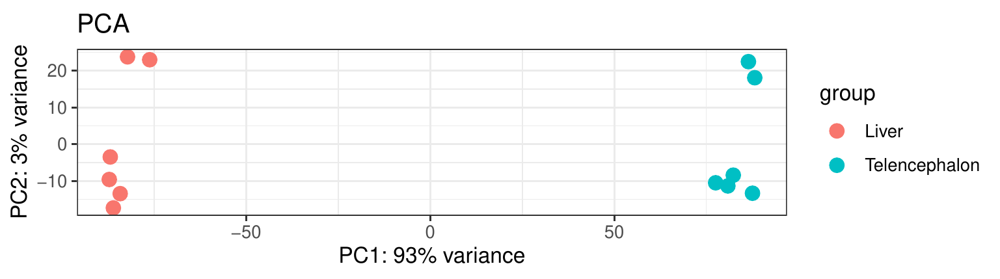
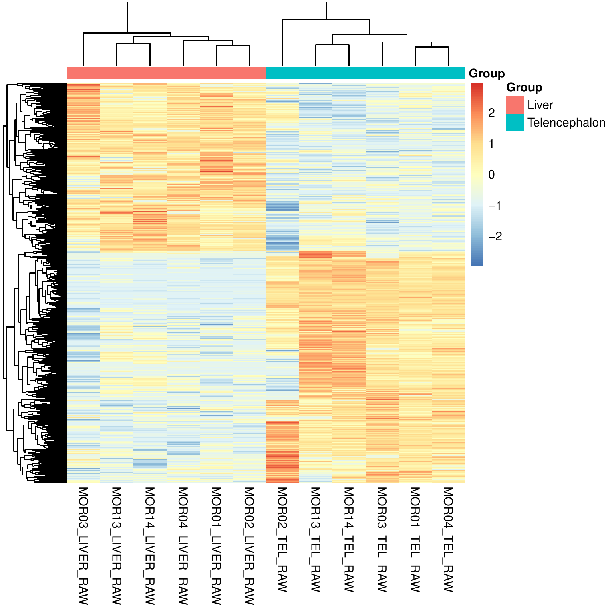
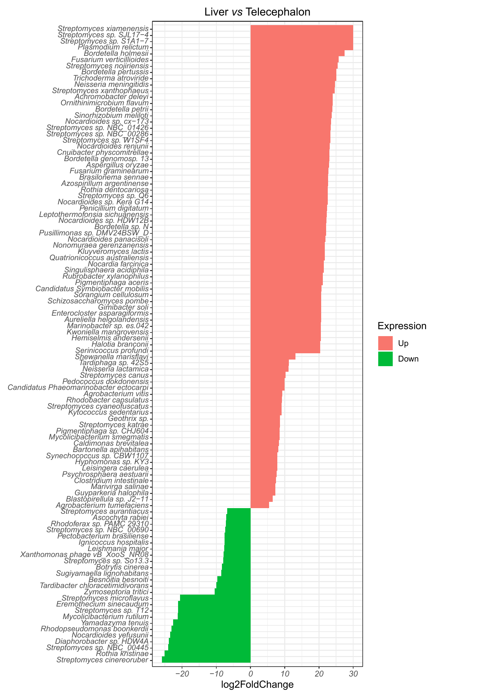
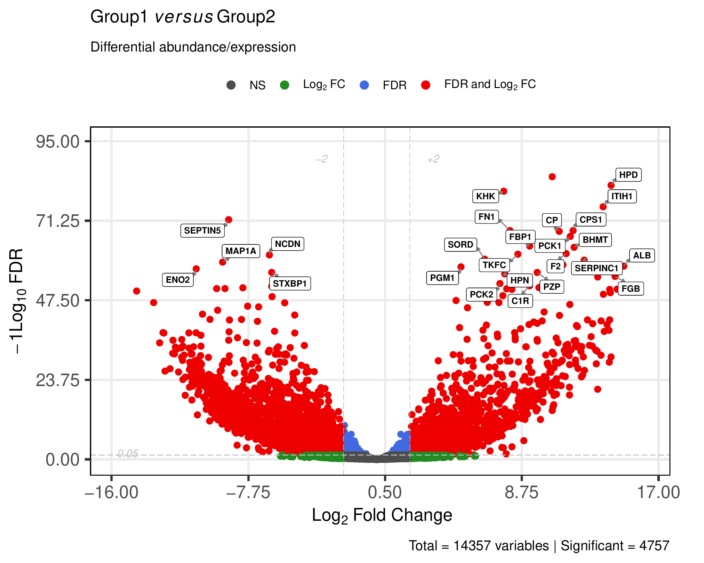
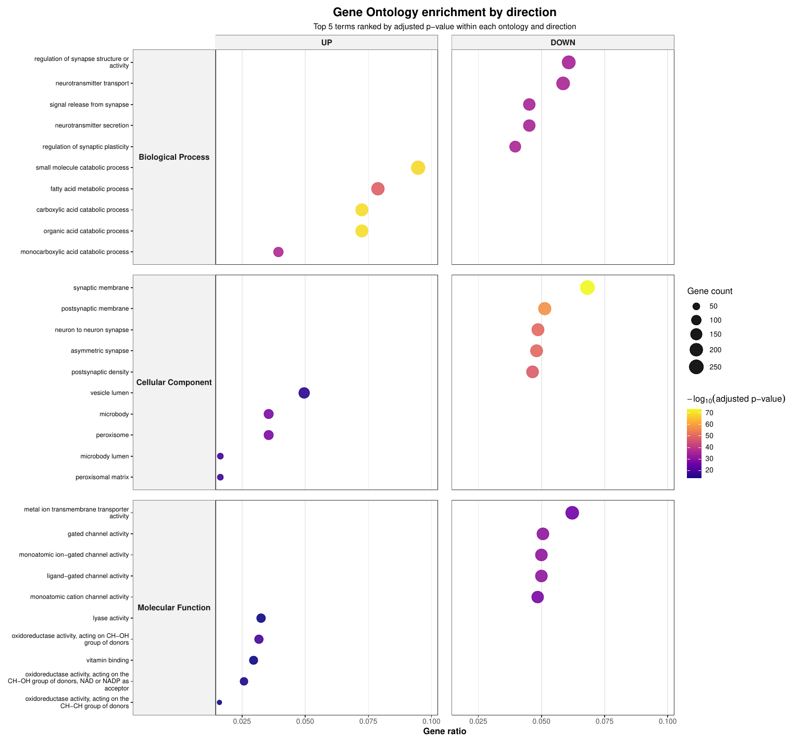

Host expression outputs¶
This page describes the main host gene-expression outputs generated by MTD Explorer.
These outputs are produced when the workflow runs in comparison mode and host gene counts are available.
The host expression block includes count matrices, normalized matrices, principal component analysis plots, heatmaps, differential-expression tables, volcano plots, and downstream functional interpretation outputs.
Where these outputs are stored¶
The main host expression comparison outputs are stored in:
Pairwise comparison-specific outputs are stored inside subdirectories such as:
The exact comparison folder name depends on the group names in the samplesheet.
For example, if the comparison is liver versus telencephalon, the output folder may be:
Main host expression files¶
A typical host expression output block contains files such as:
host_counts.txt
Host_DEG/host_counts_DEG.csv
Host_DEG/host_counts_normalized.csv
Host_DEG/host_counts_normalized_transformed.csv
Host_DEG/host_counts_TPM.csv
Host_DEG/heatmap.pdf
Host_DEG/heatmap_thumbnail.pdf
Host_DEG/PCA.pdf
Host_DEG/PCA_label.pdf
Host_DEG/PCA_color.pdf
Host_DEG/PCA_label_color.pdf
For each comparison, MTD Explorer may also generate files such as:
Host_DEG/Liver_vs_Telencephalon/host_counts_Liver_vs_Telencephalon.csv
Host_DEG/Liver_vs_Telencephalon/host_counts_Liver_vs_Telencephalon_gene_symbols_table.csv
Host_DEG/Liver_vs_Telencephalon/Barplot_Liver_vs_Telencephalon.pdf
Host_DEG/Liver_vs_Telencephalon/host_counts_Liver_vs_Telencephalon_volcano.pdf
Host_DEG/Liver_vs_Telencephalon/host_counts_Liver_vs_Telencephalon.EV.volcano.log
Host count matrices¶
The initial host count matrix is usually:
This file contains host gene-level counts generated after host read alignment and gene counting.
Depending on the selected host-processing mode, host reads may be aligned using HISAT2 or Magic-BLAST, and counted with featureCounts.
Normalized and transformed matrices¶
The Host_DEG/ directory usually contains processed host expression matrices:
Host_DEG/host_counts_normalized.csv
Host_DEG/host_counts_normalized_transformed.csv
Host_DEG/host_counts_TPM.csv
These files are useful for downstream interpretation and visualization.
The host_counts_TPM.csv file is also used by later host functional-analysis
steps, including ssGSEA.
Differential expression table¶
The main differential expression table is usually:
For each pairwise comparison, MTD Explorer also writes a comparison-specific table, for example:
This table contains the differential expression results for the selected contrast.
A gene-symbol-enhanced table may also be generated:
Use the comparison-specific table when inspecting genes associated with a specific contrast.
Use the global host_counts_DEG.csv table when checking the full host DEG
summary generated for the run.
PCA plots¶
MTD Explorer generates principal component analysis plots to summarize global host expression variation among samples.
The main PCA files are:
Main PCA view¶

For documentation purposes, the main figure shown on this page is the group-colored PCA plot.
This version is usually the clearest one for quickly checking whether samples separate according to the biological groups defined in the samplesheet.
Samples that cluster close together have more similar global host expression profiles.
Samples that separate strongly along the main principal components tend to have larger global expression differences.
Additional PCA variants¶
Other PCA versions may also be generated:
The PCA_label_color.pdf file is especially useful when you need to identify
individual samples or inspect possible outliers in more detail.
How to interpret PCA¶
PCA is an exploratory visualization.
It can suggest whether the main source of expression variation matches the experimental design.
However, PCA separation alone does not prove differential expression.
Always interpret PCA together with sample metadata, count depth, differential-expression tables, and biological context.
Host expression heatmaps¶
The main heatmap files are usually:
Heatmap thumbnail¶

For documentation purposes, the thumbnail heatmap is shown on this page because the full heatmap can be too large for comfortable inline viewing.
The thumbnail provides a compact overview of sample clustering, gene clustering, and broad host expression structure.
Full heatmap¶
The complete heatmap is usually available in:
Use the full heatmap when you need to inspect the expression structure in more detail, especially for larger gene sets or when row labels are important.
Differential expression summary bar plot¶
The comparison-specific bar plot is usually stored as:
Bar plot preview¶

For documentation purposes, a cropped preview of the upper part of the bar plot is shown on this page.
This makes the figure easier to view inline while still providing a quick overview of the differential expression summary.
Full bar plot¶
The complete figure is usually available in:
Use the full bar plot when you need to inspect all plotted categories in detail.
This plot is useful for quickly checking the direction and scale of host transcriptional differences between groups.
Volcano plot¶
MTD Explorer generates an enhanced volcano plot for each host differential-expression comparison using EnhancedVolcano.
For a comparison such as liver versus telencephalon, the enhanced volcano plot is usually stored as:

The volcano plot summarizes the differential expression results by combining effect size and statistical support.
In general:
The corresponding log file is usually:
Use this log file if the enhanced volcano plot is missing, if gene labels do not appear as expected, or if the plotting step produced warnings.
Some runs may also contain a standard volcano plot, such as:
The standard volcano plot is retained as an output file, but the enhanced volcano plot is usually clearer for documentation and interpretation.
Gene annotation cache files¶
MTD Explorer may generate host gene annotation cache files in:
Common files include:
These files help map host gene identifiers to gene symbols, Entrez IDs, gene descriptions, and functional annotation terms.
They are especially useful when working with non-model organisms or custom host annotation packages.
Functional enrichment outputs¶
Host differential expression can be followed by functional interpretation using Gene Ontology and KEGG resources.
These outputs help summarize the biological themes associated with the host differential-expression results.
GO biological theme dotplot¶
The most compact host enrichment summary is usually:
The corresponding source table is usually:

This dotplot summarizes the top host Gene Ontology themes detected in the comparison.
It is useful as a compact overview because it avoids displaying the very large set of individual enrichment and GSEA figures.
Additional GO outputs¶
Additional Gene Ontology outputs may also be generated in
Host_DEG/, including:
Host_DEG/biological_theme_comparison_GO.pdf
Host_DEG/biological_theme_comparison_GO_results.csv
Host_DEG/biological_theme_comparison_GO_net.pdf
Host_DEG/biological_theme_comparison_GO_net_BP.pdf
Host_DEG/biological_theme_comparison_GO_net_BP_RETRY_top10.pdf
Host_DEG/biological_theme_comparison_GO_net_CC.pdf
Host_DEG/biological_theme_comparison_GO_net_CC_RETRY_top10.pdf
Host_DEG/biological_theme_comparison_GO_net_MF.pdf
Host_DEG/biological_theme_comparison_GO_net_MF_RETRY_top10.pdf
These files are useful for detailed inspection, but they can be visually dense.
For documentation purposes, this page shows only the compact faceted dotplot.
Additional KEGG outputs¶
KEGG pathway-level summaries may also be generated, such as:
Host_DEG/biological_theme_comparison_KEGG_derived_PATHWAY.pdf
Host_DEG/biological_theme_comparison_KEGG_derived_PATHWAY_results.csv
Host_DEG/biological_theme_comparison_KEGG_derived_PATHWAY_net.pdf
These outputs are useful for pathway interpretation and should be inspected together with the DEG tables and GO results.
Per-comparison enrichment folders¶
Comparison-specific enrichment outputs are usually stored in folders such as:
These folders may contain enrichment tables, dot plots, network plots, tree plots, upset plots, and per-term GSEA figures.
The GSEA_all/ folder can contain many individual term-level plots.
Those files are best treated as detailed supplementary outputs rather than inline documentation figures.
How to interpret enrichment outputs¶
Functional enrichment outputs help answer questions such as:
Do not interpret enriched terms as direct proof of mechanism.
Use them as biological summaries that should be checked against the DEG table, gene annotations, expression direction, and study design.
Host expression matrix QC outputs¶
In some runs, MTD Explorer may also generate exploratory host expression matrix QC outputs under:
Typical files may include:
host_expression_pca.png
host_expression_top_variable_heatmap.png
host_expression_sample_correlation_heatmap.png
host_expression_detected_features_per_sample.png
These outputs are descriptive QC plots for the host count matrix.
They may be absent in older runs, comparison-only legacy outputs, or runs where the host matrix QC step was skipped.
Recommended inspection order¶
For a host expression comparison, inspect files in this order:
host_counts.txt
Host_DEG/host_counts_TPM.csv
Host_DEG/PCA_color.pdf
Host_DEG/PCA_label_color.pdf
Host_DEG/heatmap.pdf
Host_DEG/host_counts_DEG.csv
Host_DEG/Liver_vs_Telencephalon/host_counts_Liver_vs_Telencephalon.csv
Host_DEG/Liver_vs_Telencephalon/host_counts_Liver_vs_Telencephalon_volcano.pdf
Host_DEG/Liver_vs_Telencephalon/GO/
Host_DEG/Liver_vs_Telencephalon/KEGG/
methods/mtd_methods_run_parameters.csv
The methods/mtd_methods_run_parameters.csv file is useful because it records
important run settings, database paths, host ID, alignment mode, gene-counting
settings, and software versions.
What these outputs can support¶
Host expression outputs can help answer questions such as:
What not to conclude¶
Do not interpret PCA separation as proof of differential expression.
Do not interpret a volcano plot without checking the underlying table.
Do not treat gene labels in a figure as the complete list of relevant genes.
Do not interpret enriched terms as direct proof of mechanism.
Do not compare host DEG results across runs unless the reference genome, annotation, filtering, normalization, and statistical settings are comparable.
When outputs may be missing¶
Host expression outputs may be absent or incomplete when:
- host reads were not detected;
- host alignment failed;
- gene counting failed;
- the host annotation file was missing or incompatible;
- the samplesheet did not contain valid comparison groups;
- the run was executed in exploratory mode;
- the differential-expression step failed;
- the enhanced volcano step failed but the main pipeline continued;
- too few samples were available for the requested comparison.
If exploratory/host_expression/ is missing but Host_DEG/ exists, the run
still contains host comparison outputs.
If Host_DEG/ is missing, the run likely did not complete the host DEG block
or was executed without comparison-mode host differential expression.